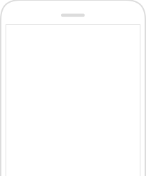
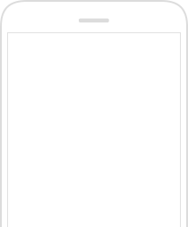

공인인증서 내보내기(복사하기)
메트라이프 생명 모바일창구 서비스는 고객님의 금융거래 및 보안성 강화를 위하여 공인인증서를 통한 서비스를 제공합니다.
각종 은행 및 금융권에서 공인인증서를 발급 받으신 후 PC를 통해 스마트폰으로 내보내기(복사)를 하시면 모든 서비스를 이용하실 수 있습니다.

STEP 1
메인화면/사이트맵 > 공인인증센터 메뉴 터치
STEP 2
공인인증서 가져오기 터치

STEP 3
스마트폰에 표시된 8자리 인증번호를 PC에 입력 후 다음 클릭
STEP 4
인증서복사 성공
공인인증서 내보내기
프로그램 수동 다운로드
닫기